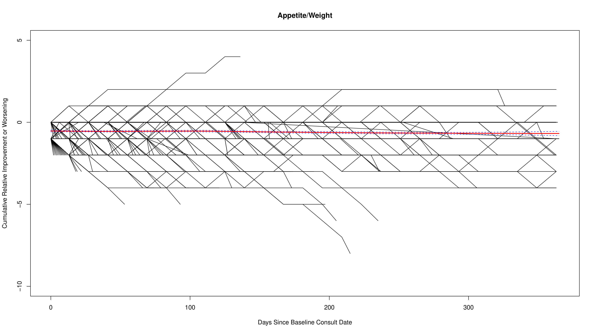
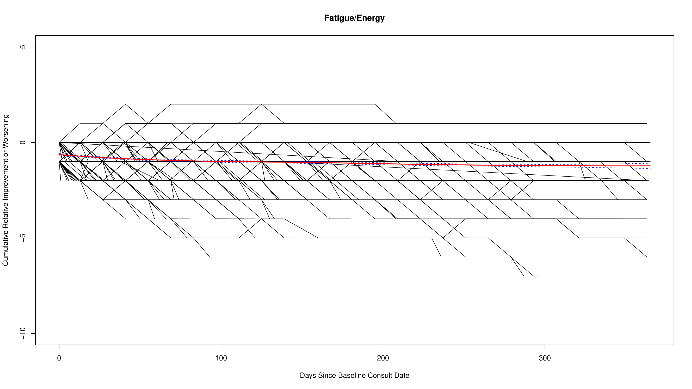
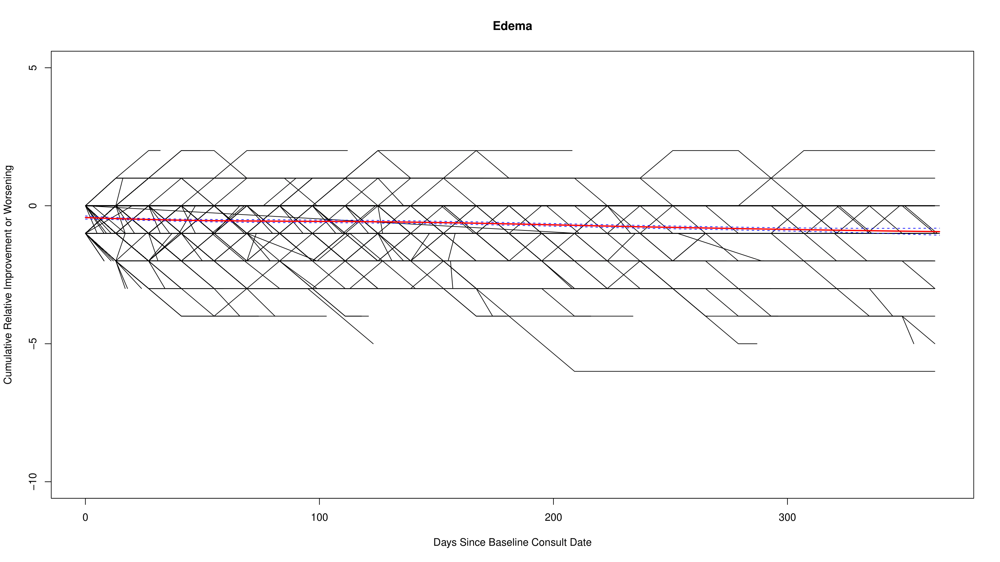
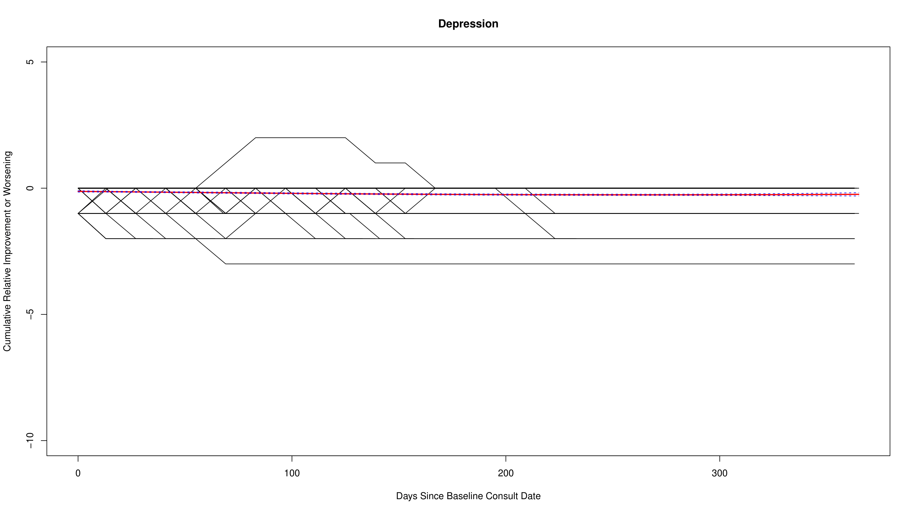
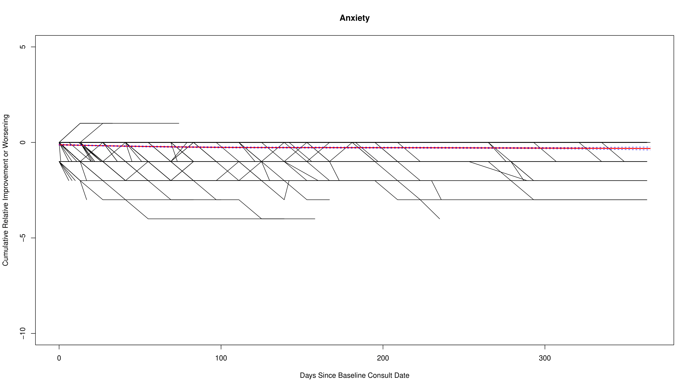
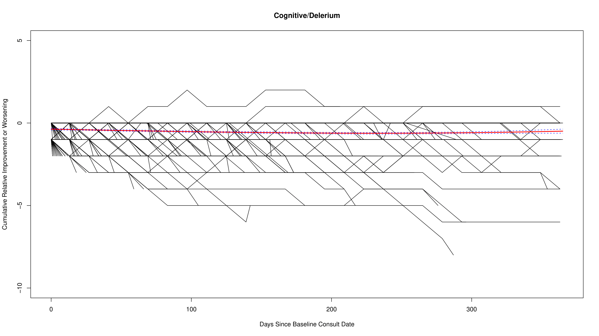
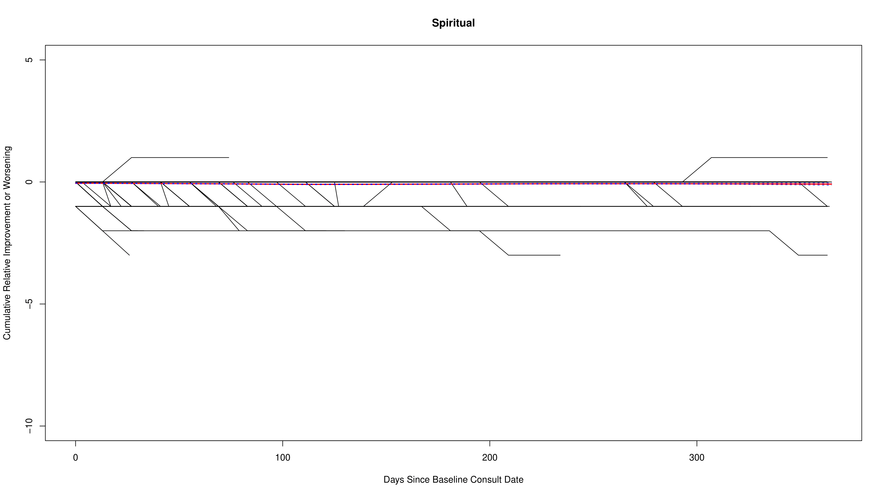
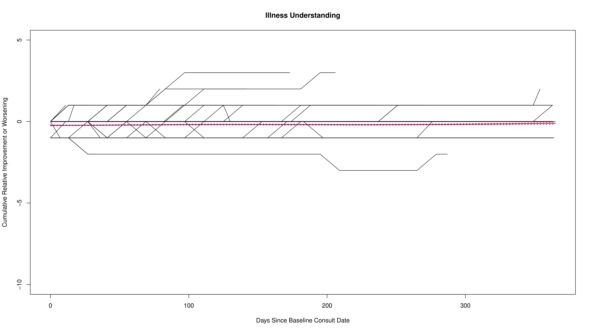
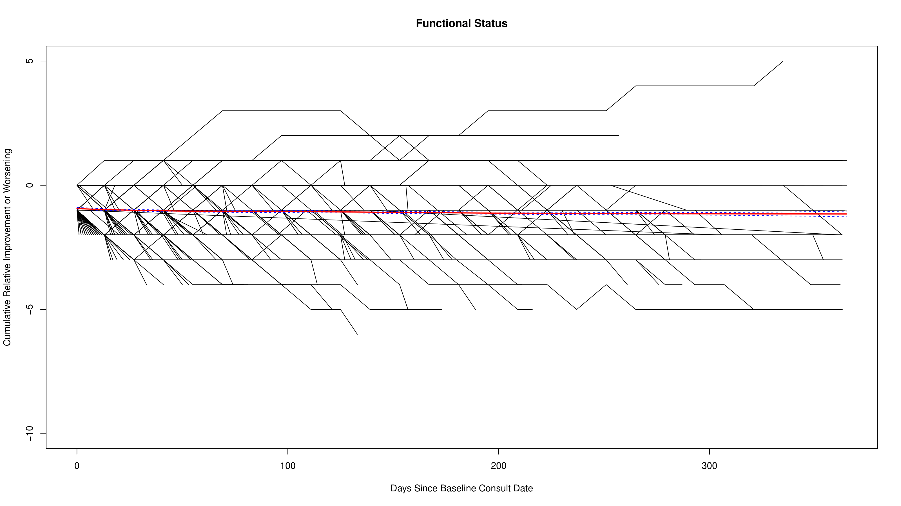
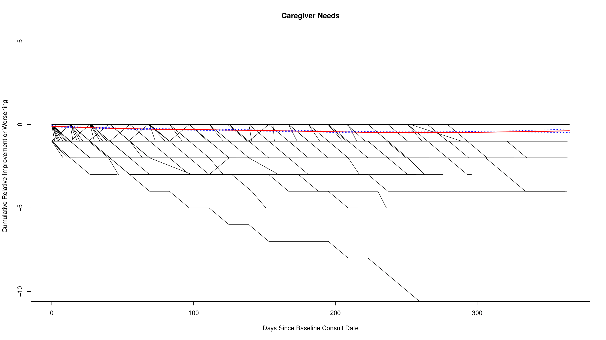

Supplementary Figures
Palliative Care Needs in Heart Failure
The following figures show the trajectories for all the palliative care needs measured in this study. The X-axis represents the number of days, while the Y-axis shows the cumulative scores assigned to participants at baseline and during follow-up visits, based on whether they had any palliative care needs at baseline and whether the needs improved, remained unchanged, or worsened over time. Each black line in the figure represents an individual trajectory, while the red line denotes a LOESS-smoothed curve summarizing the overall trend.
Figure 1: Pain
Adapted framework outlining 5 domains and 14 subdomains used for needs assessment.

Figure 2: Dyspnea
Overview of chart abstraction, audit process, and REDCap integration.

Figure 3: Nausea or Vomiting
Schematic showing how palliative care needs were scored over time.

Figure 4: Abnormal Bowel Movements
Examples of cumulative need scores over time for three patients.

Figure 5: Appetite or Decreased Weight
Analysis of appetite changes and weight loss trends in patients over time.
Figure 6: Fatigue or Low Energy
Insights into fatigue levels and energy management strategies.
Figure 7: Edema
Visual representation of edema severity and treatment outcomes.
Figure 8: Depression
Depression assessment scores and intervention effectiveness.
Figure 9: Anxiety
Trends in anxiety levels and coping mechanisms.
Figure 10: Delirium or Decreased Cognition
Case studies on cognitive decline and delirium management.
Figure 11: Spiritual Distress
Exploration of spiritual needs and support systems.
Figure 12: Illness Understanding
Patient and caregiver understanding of illness progression.
Figure 13: Functional Status
Functional status assessments and rehabilitation outcomes.
Figure 14: Caregiver Well-being
Caregiver stress levels and support interventions.
